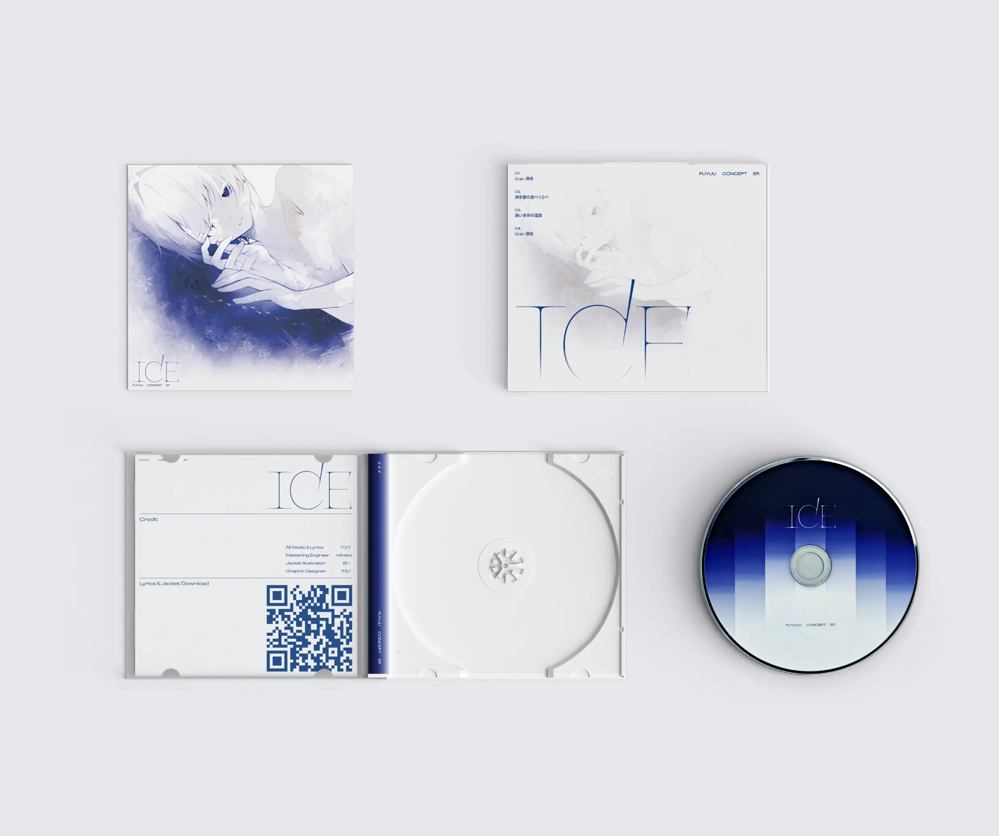
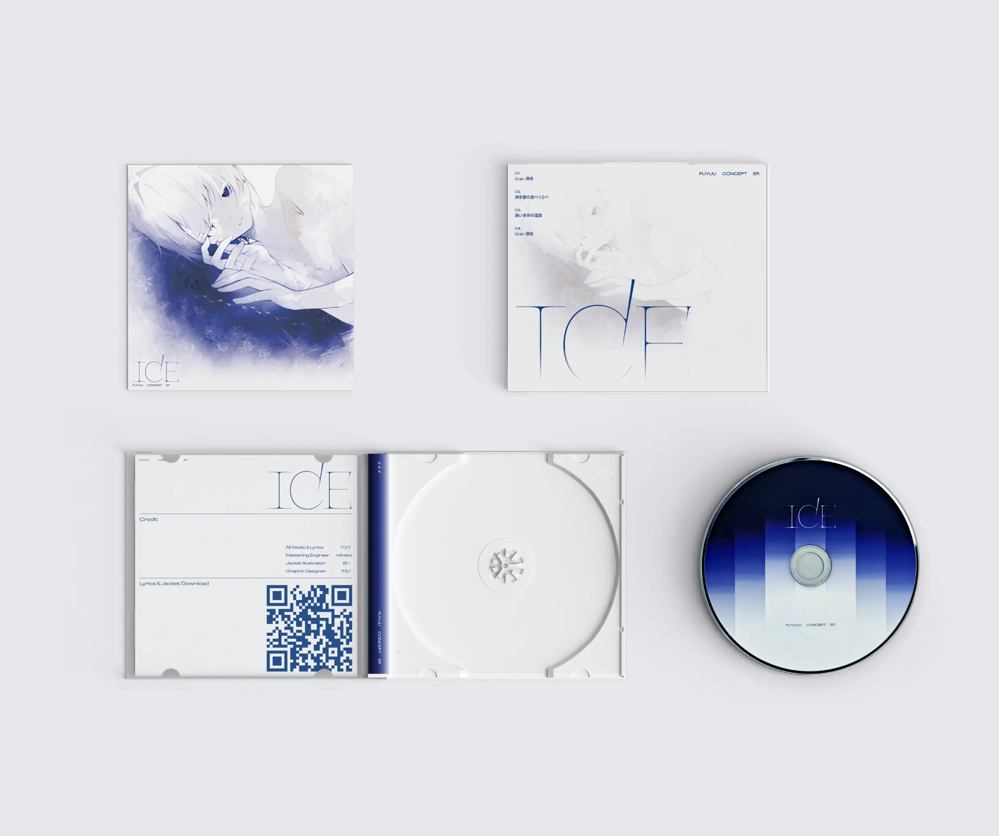

Fuyuu
ボーカロイドプロデューサーとして活動されている、フユウさんのデザイン制作です。フユウさんの楽曲は、現代社会のネガティブな側面と、そこから立ち現れるホラーの世界観で構成されています。しかし、そのホラー表現は、欧米のホラー映画のように血や武器で直接的な恐怖を与えるものではありません。むしろ、夕暮れの不気味な雰囲気や、雨の降り方から恐怖を感じるような、音やビジュアルの「間」や「文脈」を読み取ることで恐怖を覚える、日本的なホラーを音と詩で体現しています。
このようなフユウさんの世界観を表現するため、ビジュアル面では基本的なレイアウトや造形を用いつつ、楽曲や詩の内容を想像させるニュアンスをわずかに混ぜ込むことで、まさに「文脈を読み取るホラー」を表現しました。さらに、四一（しいち）さんや薬屋さんからご提供いただいたイラストレーションを最大限に活かせるようなビジュアルにできるよう検証を行なっています。
This is a design project by Fuyuu, who works as a Vocaloid producer. Fuyuu's music is composed of the negative aspects of modern society and the horror worldview that emerges from them. However, this horror expression does not deliver direct fear through blood and weapons like Western horror films. Rather, it embodies a Japanese-style horror through sound and poetry, where fear arises from reading the "pauses" and "context" in the sound and visuals—like feeling dread from the eerie atmosphere of dusk or the way rain falls.
To express Fuyuu's worldview, we employed a basic layout and design for the visuals while subtly incorporating nuances that evoke the content of the songs and poetry, thereby achieving a "context-reading horror" experience. Furthermore, we are conducting verification to ensure the visuals can fully utilize the illustrations provided by Shiiichi and the pharmacist.
 
